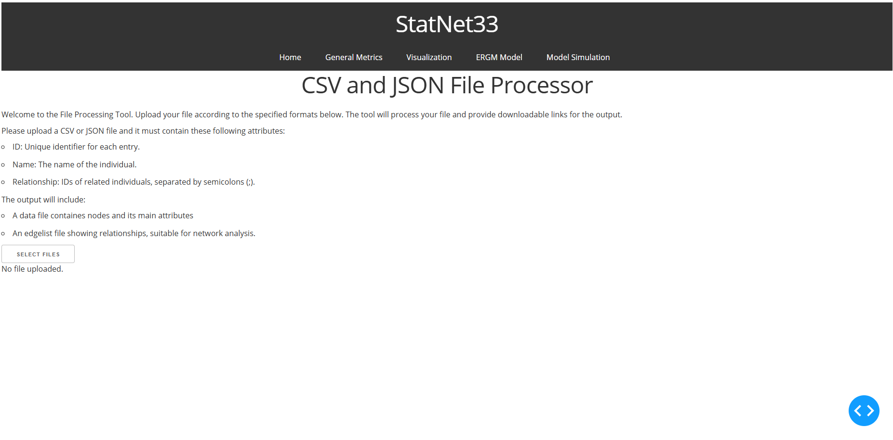
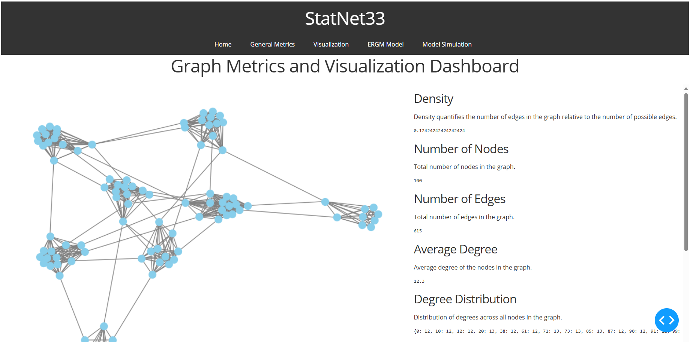
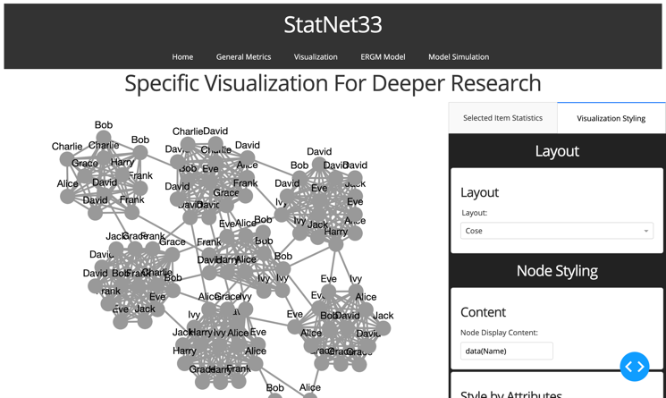
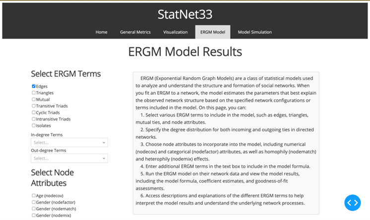
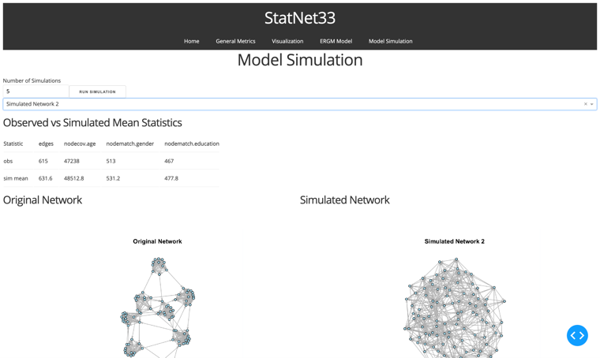

Statnet33 — Social Network Analysis
A Social Network Analyzer application with a flexible and user-friendly, cross-platform tool for social network analysis and visualisation.
View on GitHubBuilt With
Example

Home Page

General Metrics Page

Visualization Page

ERGM Model Page

Simulation Page
About StatNet33
StatNet33 is a user-friendly, cross-platform Social Network Analyzer that combines the power of Python and R to facilitate the study of social networks. The application provides an intuitive interface for users to upload network data in common formats, such as CSV or JSON, ensures data integrity through validation tools, and suitable cloud deployment.
The app offers a set of features for social network analysis, including:
- Network cohesion statistics to summarize and characterize network properties, such as centrality, connectivity, and density.
- Interactive and customizable network visualizations using Dash Cytoscape, supporting various styles, colors, and labeling options.
- Exponential Random Graph Models (ERGM) to analyze structural patterns and associated factors in the network, allowing users to assess model fit and interpret results.
StatNet33 aims to make social network analysis more accessible and efficient for researchers, analysts, practitioners, and curious individuals studying the structures, patterns, and dynamics of social networks.
Visit the GitHub Repository
For the full code and documentation, visit the GitHub repository.